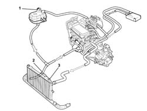
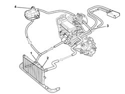

1088A30 ENGINE COOLING SYSTEM - draining and refilling circuit and bleeding air
- Path
- Procedures > 10 ENGINE > 1088 ENGINE COOLING > 1088A miscellaneous - engine cooling checks > 1088A30 ENGINE COOLING SYSTEM - draining and refilling circuit and bleeding air
- Kind
- repair procedure (removal / refitting; the operation number is the code)
- Applies to
- all engines; all production periods
- Interactive page
- https://sloeber94.github.io/elrnDB-fDbl/en/#/2584296
Applies to: all engines; all production periods
Drain the cooling system as described below.
7055B54 under-engine guard - r r
1. Unscrew the expansion tank.
Position a suitable container beneath the radiator to collect the coolant.
2. Disconnect the lower radiator hose and drain the engine coolant.
3. Open the bleed on the radiator and wait until the cooling system is completely drained.

Applies to: all engines; all production periods
Fill the cooling system as follows:
Take a sufficient quantity of coolant.
For heated versions, take the following quantity of coolant.
 | Type | Component | Name | Qty. |
|---|---|---|---|---|
- | Fluid [l] | ENGINE COOLING CIRCUIT | PARAFLU | - |
For air conditioned versions, take the following quantity of coolant.
| Type | Component | Name | Qty. |
|---|---|---|---|---|
- | Fluid [l] | ENGINE COOLING CIRCUIT | PARAFLU | - |
1. Connect the lower engine radiator hose and secure with a new collar
Slowly pour coolant into the expansion tank. Take care not to exceed the MAX notch indicating maximum permitted level.
2. Open the fitting on the radiator as soon as coolant begins to emerge from the threaded hole in the bleed fitting.
3. The 'continuous bleed' shown in the figure will eliminate the residual air in the system.
Finish adding coolant when the level reaches the MAX notch indicating maximum permitted level in the expansion tank.
Start the engine and leave idling for at least 2-3 minutes.
If necessary, top up with engine coolant to the MAX notch.
4. Close the expansion tank cap.
Pump the accelerator at intervals gradually to take engine speed up to 3000 rpm.
If necessary, top up with engine coolant to the MAX notch.
Wait until the fan comes on at least twice.
Turn off the engine and wait for the coolant to cool down.
Check the coolant level is between the MIN and MAX notches on the expansion tank.
If necessary, top up the level by unscrewing the cap and adding engine coolant
| Type | Component | Name | Qty. |
|---|---|---|---|---|
- | Fluid [l] | ENGINE COOLING CIRCUIT | PARAFLU | - |
7055B54 under-engine guard - r r
